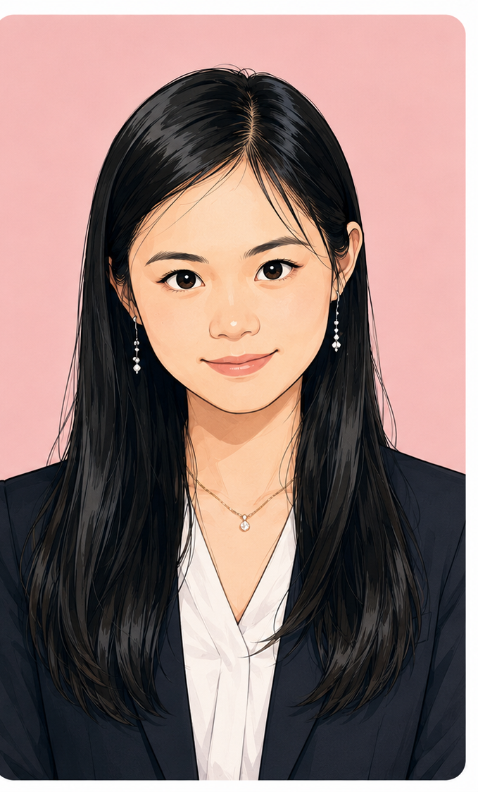
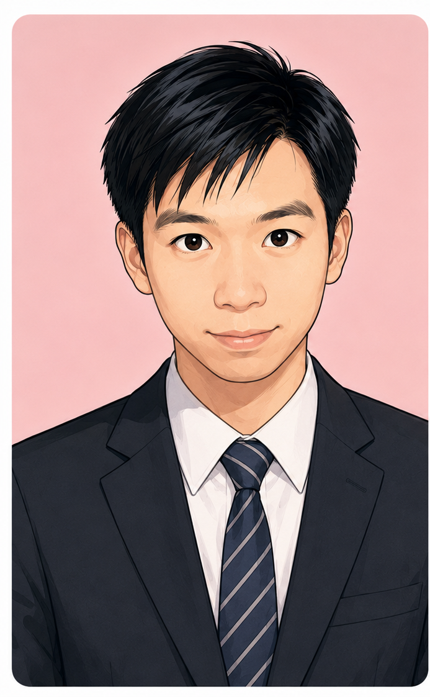

觀念不穩
常常會算，卻說不清楚為什麼，適合重新建立基礎觀念。
如果孩子有下面這些情況，系統化的陪伴與練習會特別有幫助。
常常會算，卻說不清楚為什麼，適合重新建立基礎觀念。
透過拆解題意、一步一步示範，建立解題方法。
從學校進度、作業與考試範圍整理出適合的練習方向。
除了課堂理解，也逐步培養練題、對答案與檢討的習慣。
從了解孩子的狀況開始，逐步建立適合的學習方式。
了解年級、科目、學校進度與目前遇到的問題。
確認希望加強的是基礎、學校進度、段考或長期規劃。
確認上課時間、地點與課程方式。
依孩子的理解程度與學習狀況調整教學內容。
透過作業、錯題與課後提問持續觀察學習狀況。
不只是把答案教給孩子，而是幫助孩子理解「為什麼」。
把複雜觀念拆成簡單的小步驟，找出學生真正不懂的地方。
把題目拆解，一步一步建立解題方法。
搭配自己製作的互動題庫，讓練習更有趣。
完整的學習，不只是在課堂上聽老師講解，而是由四個環節形成一個循環。
老師負責教，學生負責學。
老師會盡可能協助學生理解觀念、建立基礎；學生則需要維持良好的學習態度與身心狀態。上課前保持良好的精神狀態，也是學習的一部分。
把課堂上的理解，透過練習確認是否真正學會。
練題主要由學生負責，目的在於鞏固上課所學。多數學生仍需要透過練習確認自己的理解程度。
寫完不是結束，確認對錯才是下一步。
完成作業後主動確認對錯，看到錯題會想知道「為什麼錯」，並先嘗試查閱解答、自行訂正，能讓學生自行解決一部分問題。
對國中生會較明確要求；小五以上則逐步培養這項習慣。
找出錯誤原因，真正把問題弄懂。
對完答案後，可以先自行思考錯誤原因，或參考解答理解解題過程。仍不理解的題目，再於課堂或 LINE 群組提問，由老師進一步協助。
除了實體教學，也提供完整的課前、課後與學習追蹤服務，讓家教不只是單次上課，而是陪伴孩子穩定學習。
每次上課前一天提醒上課時間，並協助掌握學校行事曆與段考時程。
提供歷屆考題與補充題目，搭配課程進行複習與加強。
提供 LINE 群組課後提問與解題，協助孩子處理課後遇到的問題。
持續關注孩子的學習狀況、作業完成度與學習習慣，並與家長討論。
每月整理鐘點費與課程時數，讓家長清楚掌握上課狀況。


依學生目前的程度與學習需求調整教學內容。
目前提供英文、小學數學、國中數學互動題庫，以及國中理化實驗大全、教材圖解與國中升學指南。
原本：基礎觀念容易混淆、遇到題目不知道從哪裡開始。
調整：重新整理觀念 → 分步驟練習 → 錯題檢討。
方向：讓學生逐漸建立自己的解題流程。
原本：看過單字卻容易忘記，拼字與句型不穩。
調整：自然拼讀、字義、例句與小測驗搭配練習。
方向：讓單字不只「背過」，也能在句子中看懂。
可以。LINE 群組內的課後提問、解題與學習服務，皆為實體課程的附加服務，不另收費。
可以依課程狀況協助學生理解作業內容與錯題，但會以建立理解與解題能力為主，而不是單純代寫。
可以依學生目前的需求討論課程安排，例如學校進度、段考複習或基礎補強。
網站目前提供小學與國中的數學、英文及國中理化相關學習資源，實際授課科目與年級可再聯絡確認。
LINE 群組內的課後服務為實體課程附加內容，不另收費。
有任何課程問題，歡迎和我們聯絡 💗
數學・英文家教
數學・理化・生物、地球科學、自然家教
🌷 歡迎先聯絡我們了解課程內容與適合的上課方式。